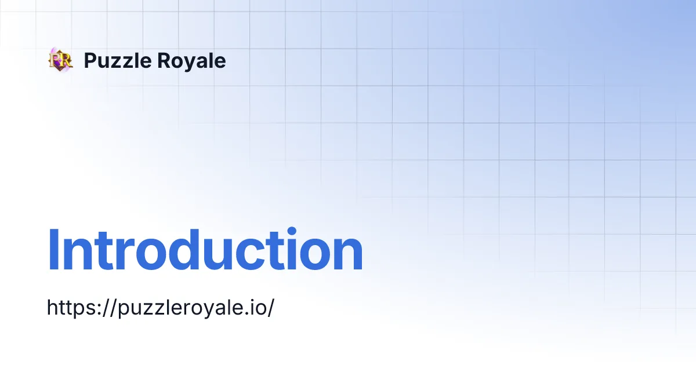

GitBook / YouTube
Puzzle Royale — документация продукта

Документация Puzzle Royale: концепция игры и развитие продукта.
Моя роль
Head of PMO / Product Delivery в REDRIFT.
Открыть оригинал ↗GitBook / YouTube

Документация Puzzle Royale: концепция игры и развитие продукта.
Head of PMO / Product Delivery в REDRIFT.
Открыть оригинал ↗